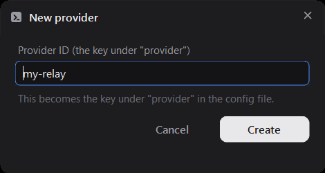
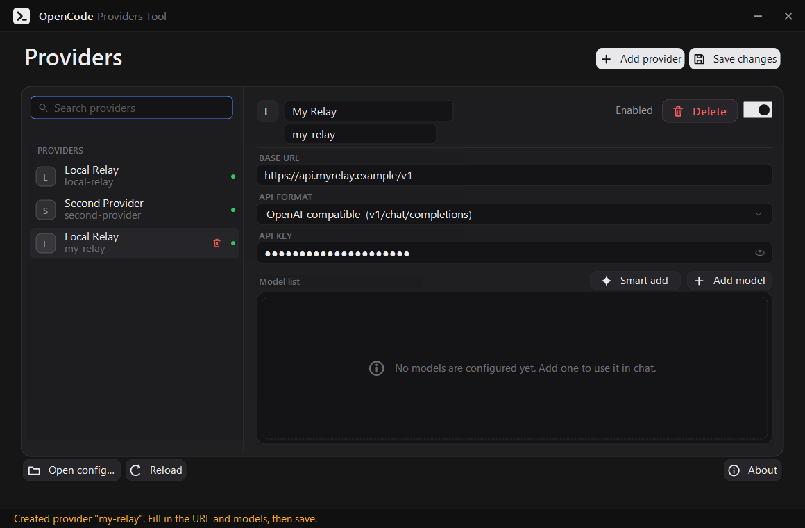
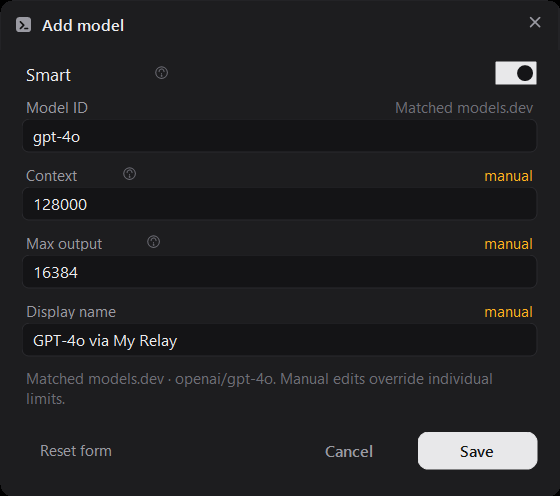
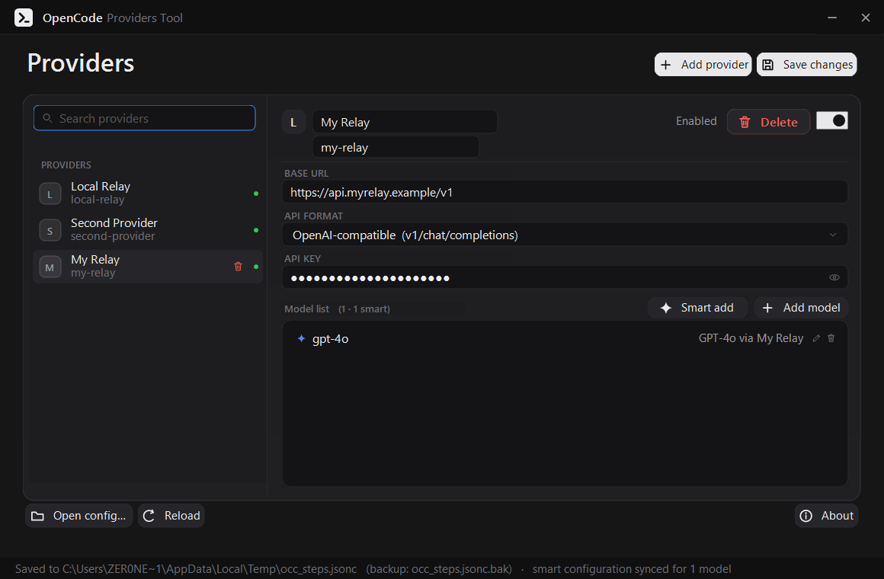
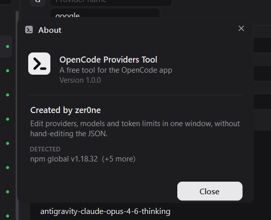

free · mit · windows
Add a model without rebuilding the provider.
In OpenCode, changing one model usually means removing the provider and setting it up again — API key and Base URL included. This tool edits a provider's model list in place. The provider stays connected the whole time, so nothing downstream has to be redone.

how it works
Four steps, and the provider is never disconnected.
These are real captures of the app running against a demo config — no mockups. Every step writes
into your opencode.jsonc, and nothing is saved until you press
Save changes.
01 / name it
Add a provider
The provider id becomes the key under "provider" in the config, so it is worth
getting right up front. Add provider asks for it and nothing else.

02 / point it somewhere
Fill in the URL and the key — once
A display name, a baseURL and the API key. This is the part you only want to type
once: from here on, models can come and go without touching any of it.
- blank field = leave the saved value alone
- the key is masked on screen

03 / the actual point
Edit the models in place
Add, rename or remove models on a provider that is already set up. Context and output limits are pulled from models.dev as you type, and each field is labelled auto or manual — the moment you edit one, it stops following recommendations.
- the provider's id, baseURL and key are untouched
- context and output are written together, as the schema requires

04 / save
One button, and it is live
Save changes writes the file: a .bak copy first, then 2-space JSON with your
comments put back where they were. OpenCode picks it up on its next start.

features
Built so it cannot lose your config.
The brief was “do not break the file”, and that shapes almost every decision in the editor.
Smart configuration
Display name, context window and max output are looked up on models.dev by model ID, Base URL host and API format, then refreshed on every save. A value you typed is never overwritten.

Smart add
Reads the provider's own {baseURL}/models catalog, so a whole endpoint can be
added at once instead of one row at a time. models.dev fills in whatever the provider left
out.

Finds your setup
Checks PATH, npm, bun and pnpm global roots, scoop, chocolatey, winget,
%LOCALAPPDATA%\Programs and C:\Program Files — then opens the global
config for you.

install
Download one file and run it.
No installer, and nothing to put beside it. Windows 10 (1903+) and Windows 11 already ship the runtime it needs.
# grab the exe from the latest release, then just run it > OpenCodeProvidersTool.exe # or open a specific config instead of the global one > OpenCodeProvidersTool.exe C:\path\to\opencode.jsonc
what it never touches
The edits stay in their lane.
Only the fields you actually change are written. Everything else — including keys this tool has never heard of — survives a save exactly as it was.
- $schema, plugin, and every unedited provider
- modalities, variants, cost, and an extra limit.input
- comments in a .jsonc file, put back where they were
- disabled_providers entries that belong to no provider block
- an enabled_providers whitelist, kept in step with the toggle